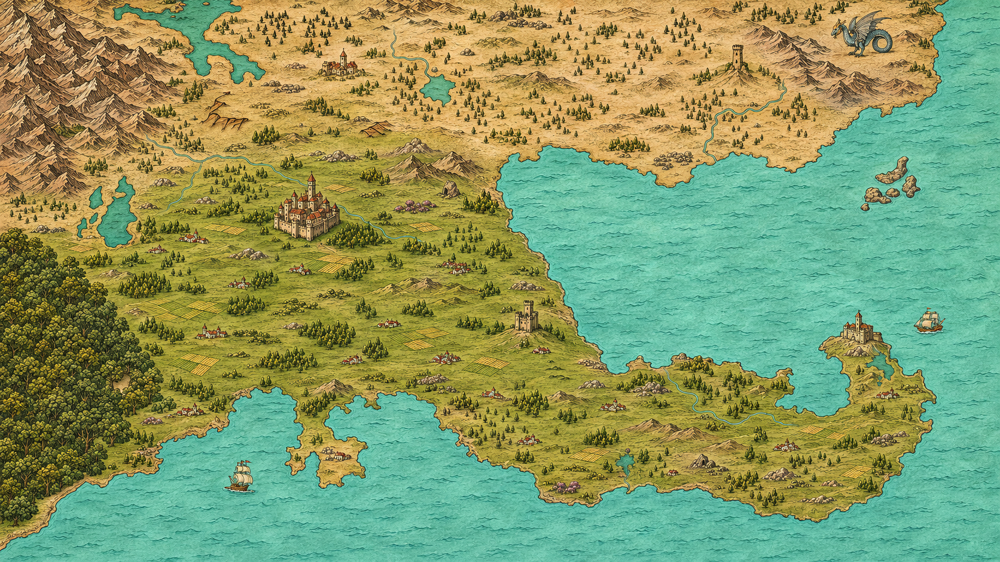

A
ARCAMIS
ATLANTE DELLE TERRE CONOSCIUTE
Ogni viaggio comincia da una mappa.
☷
Indice delle terre
Atlante
/
Le terre conosciute
TAVOLA 00

Apro la tavola…
La tavola non è stata caricata.
Riprova
ATLANTE DI ARCAMIS
Le terre conosciute
Scegli una regione sulla mappa o nell’indice.
✥
+
100%
−
△
⤢
⌖
⛶
↔
Trascina per esplorare
·
Scorri per ingrandire
Consulta la tavola illustrata ↗
Torna alla mappa ×